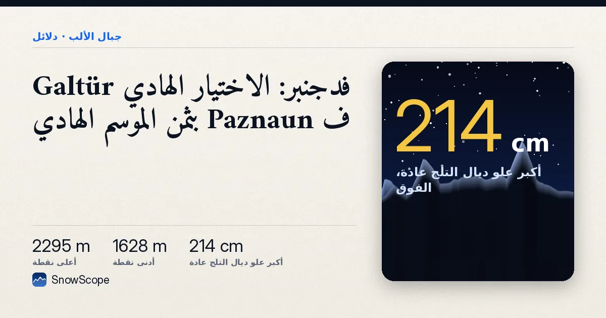

Galtür فدجنبر: الاختيار الهادي ف Paznaun بثمن الموسم الهادي
Galtür كتقع ف الجهة الهادية ديال وادي Paznaun. ف 15 ديسمبر عادي، الجهة الوسطانية كتحتفظ ب 55 سم والقمة كتوصل 73 سم. التذكرة اليومية للموسم الخفيف كتكلف 55.50 يورو لحد 18 ديسمبر، وهي واحد من أرخص الأسابيع ف محطة عالية ف التيرول.
شوف توقعات التلج مباشرة ديال Galtür فالتطبيق ديال SnowScopeالعلو ديال التلج، التنبيهات والخريطة 3D، فابور.
التلج ف ديسمبر: أحسن بزاف مما كيفكرو الناس
الزلاجين غالبا ما كيتناساو Galtür باش تكون محطة عائلية صغيرة بلا التلج الكثير. لكن سجل 46 شتوة كيقول قصة أخرى ل ديسمبر. ف الجهة الوسطانية (1961 م)، 93 % من الشتوات كان عندها 30 سم أو أكثر ف الأسبوع من 15-21 ديسمبر، و 96 % احتفظو ب 30 سم ف أسبوع الكريسماس. ف القمة (2295 م)، هاد النسب كتوصل ل 98 % و 100 %.
القاعدة ب 1628 م كتبطيء باش تتجمع: بـ 54 % فقط من الشتوات كان عندها 30 سم ف الأسبوع الأول ديال ديسمبر. اليوم الأول عادي لي فيه تغطية صلبة هناك هو 28 نونبر. لكن من منتصف ديسمبر فصاعدا، القاعدة كذلك كتستقر. ب أسبوع الكريسماس، 85 % من الشتوات كان عندها 30 سم أو أكثر ف القاعدة.


العلو ديال التلج ف جميع الشهر
ف 15 ديسمبر عادي، 40 سم ف القاعدة، 55 سم ف الجهة الوسطانية و 73 سم ف القمة. ب 24 ديسمبر، هاد الأرقام كتوصل ل 54 سم، 74 سم و 88 سم. النمط كايقع ف شبه جميع الشتوات المسجلة: ف حتى واحد من 46 شتوة، القاعدة ما كانت فارغة ف 15 ديسمبر.
أسبوع الكريسماس هو الوقت لي فيه العلو كيوصل لأعلاه ف كل مكان. الجهة الوسطانية عادي كتحتفظ ب 30 سم أو أكثر ف 96 % من الشتوات ذاك الأسبوع، و 60 سم أو أكثر ف 67 %. ف القمة، 100 % من الشتوات كان عندها 30 سم أو أكثر، و 83 % احتفظو ب 60 سم أو أعمق—التلج الحقيقي للركوب.
نافذة الموسم الخفيف
المحطة كتفتح ب 4 ديسمبر 2026. الموسم الخفيف كيدوم لحد 18 ديسمبر، مع تذكرة يومية بـ 55.50 يورو و تذكرة 6 أيام بـ 258 يورو. من 19 ديسمبر، الأسعار كتطلع ل 58.50 يورو و 286.50 يورو. لأسبوع ف منتصف ديسمبر، كتوفر 30 يورو ف تذكرة 6 أيام باش تجي بداري.
هاد الأسعار من أرخص الأسعار لمحطة عالية ف التيرول. عمق التلج ما كايتأثر بالسعر الأقل: احتمالات التلج ف الجهة الوسطانية ف النصف الثاني ديال ديسمبر نفس سواء كتدفع موسم خفيف أو موسم أساسي.
كيفاش كتقارن مع Obertauern
Obertauern، 50 كم جنوب ف Salzburg، كتقع ف نفس القاعدة 1628 م وكتغطي مساحة أكبر بزاف: 87 كم من البيستات ضد 27 كم ديال Galtür. لكن التلج ديال Obertauern ف ديسمبر أقل موثوقية. الجهة الوسطانية ديالها (1962 م) كتحتفظ ب 43 سم ف 15 ديسمبر عادي، و بـ 80 % فقط من الشتوات كان عندها 30 سم ف الأسبوع من 15-21 ديسمبر، مقابل 93 % ديال Galtür.
تذكرة 6 أيام الموسم الخفيف ديال Obertauern كتكلف 331 يورو—73 يورو أكثر من 258 يورو ديال Galtür. اختار Obertauern إذا كنتي تبغي الحجم والأجواء ديال القرية. اختار Galtür إذا كنتي تقدر الأسبوع الهادي والأرخص مع احتمالات ديسمبر أحسن شوية.
ما كاين باقي اللي خصك تعرفو قبل ما كتحجز
Galtür صغيرة: 9 تليفريكات و 27 كم من البيستات. الزلاجين اللي عندهم أسبوع كامل ممكن ما يبقاو حاجة ف التضاريس وكايحتاجو ليوم نزهة ل محطات Paznaun الكبيرة. بلاني بحالك أو ركب أسبوعك مع مناطق جنب.
وادي Paznaun كتقع ف نهاية طريق طويل لي ممكن تتسد باش تمنع الانهيارات بعد الثلوج الكثيفة. بعد التلج الكثير، خليق يوم احتياطي قبل أو بعد رحلتك. استشير النشرة ديال الانهيارات ديال التيرول (lawinen.report) كل صباح قبل ما تزلج خارج البيستات.
نصايح للي كيتزلجو
- حجز أسبوعك بين 4 و 18 ديسمبر باش تاخد تذكرة 6 أيام الموسم الخفيف بـ 258 يورو.
- جي من 15 ديسمبر وصاعدا باش تلقي تغطية قاعدة صلبة. إذا جيت بداري، بقا ف الجهة الوسطانية أو أعلاه لحد 28 نونبر لي هو التاريخ العادي لوصول 30 سم ف القاعدة.
- توقع 73 سم ف القمة ب 15 ديسمبر و 88 سم ب 24 ديسمبر؛ الجهات الفوقانية كتوفر ركوب ثابت طول الموسم الخفيف.
- دير يوم احتياطي ف برنامجك: طريق الوادي ممكن تتسد بعد الثلج الكثير. شوف الحالة قبل السفر.
- اقرا نشرة الانهيارات ديال Lawinenwarndienst Vorarlberg (lawinen.report) كل صباح إذا كنتي بغيتي تزلج خارج البيستات المشار لها.
على هاد الأرقام
العلو ديال التلج فالمحطات هو أكثر تلج فالجهة الفوقانية فالتاريخ المكتوب؛ هادو تقديرات لمنطقة، ماشي قياس فنقطة وحدة. التوقعات يمكن تتبدل. ديما شوف النشرة الرسمية ديال الانهيارات قبل ما تخرج من البيست.
النشرات الرسمية ديال الانهيارات: Lawinenwarndienst Vorarlberg
كيفاش تستاشهد بهاد المقال
للبحث، التعليم ولا الصحافة: الأرقام والرسومات تقدر تعاود تخدم بيهم بحرية تحت CC BY 4.0 مع هاد الاستشهاد.
SnowScope (2026), Galtür فدجنبر: الاختيار الهادي ف Paznaun بثمن الموسم الهادي, https://snowscope.app/blog/ar/2026/11/galtuer-december-skiing-quiet-paznaun-budget.html, تشاف ف 2026-11-14
SnowScope (Atlas Labs). (2026, November 14). Galtür فدجنبر: الاختيار الهادي ف Paznaun بثمن الموسم الهادي. SnowScope snow reports. https://snowscope.app/blog/ar/2026/11/galtuer-december-skiing-quiet-paznaun-budget.html
BibTeX
@misc{snowscope2026galtuerdecemberskiingqui,
author = {{SnowScope (Atlas Labs)}},
title = {Galtür فدجنبر: الاختيار الهادي ف Paznaun بثمن الموسم الهادي},
year = {2026},
month = nov,
howpublished = {\url{https://snowscope.app/blog/ar/2026/11/galtuer-december-skiing-quiet-paznaun-budget.html}},
note = {Published 2026-11-14 13:29 UTC; accessed 2026-11-14}
}· CC BY 4.0 · الطريقة، الداتا والأدوات →
Galtür: التلج والحرارة حسب العلو، هاد الشتا مقارنة مع اللي فاتت (الأدوات) →
تابع Galtür
فابور: ميساج ملي يجي التلج، والتوقعات كل صباح.